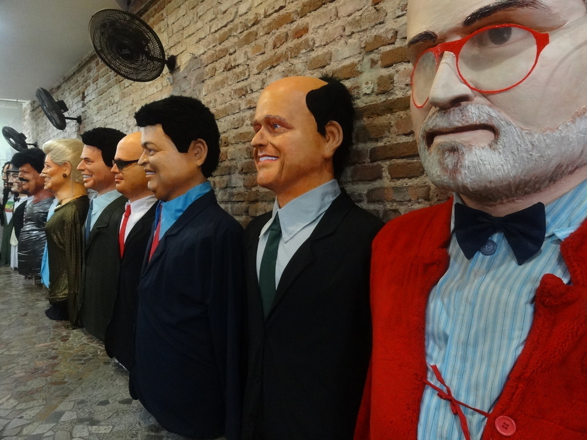

Conheça o Parque das Esculturas Francisco Brennand (PE):
.jpg)
O Parque das Esculturas Francisco Brennand é um museu de arte a céu aberto localizado na cidade do Recife, capital do estado brasileiro de Pernambuco. Constitui um dos principais feitos do artista plástico pernambucano Francisco Brennand. Idealizado na década de 1990 como parte do projeto “Eu vi o mundo… Ele Começava no Recife” para comemoração dos 500 anos do descobrimento do Brasil, o parque foi inaugurado em 29 de dezembro 2000.
Ao total, existem 90 esculturas criadas por Francisco Brennand, sendo a principal obra no complexo a Torre de Cristal, com 32 metros de altura e confeccionada em argila e bronze. Apesar de ser um dos principais pontos turísticos de Recife, em pesquisa ao Jornal do Comércio feito em 2018, compreendeu que mais da metade da população não conhece o parque. No ano de 2014, todas as obras foram restauradas, assim como o parque, além do recebimento de reforço na segurança do complexo.
Conheça a Embaixada dos Bonecos Gigantes de Olinda (PE):
Quem perdeu o Carnaval de Recife e Olinda e não conseguiu ver os bonecos gigantes em ação não precisa ficar triste! A Embaixada dos Bonecos Gigantes expõe os famosos bonecos criados para participar do Carnaval nas duas cidades, permitindo que os turistas tenham uma clara ideia da dimensão, da estrutura e do modo de criação dos personagens. Os bonecos pesados e bem trabalhados representam personalidades variadas, personagens de desenhos e figuras brasileiras que se destacam ao longo do ano.
Adultos R$ 10,00 (Dez reais). Criança (com até 12 anos) acompanhada por adulto pagante, entra sem pagar. Horário de Funcionamento: Segunda a Domingo das 08:00h às 18:00h. Abre nos feriados exceto no Carnaval (do sábado até a terça), 25 de dezembro e 01 de janeiro.